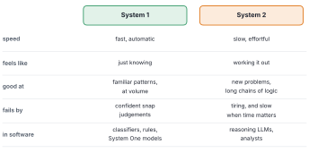
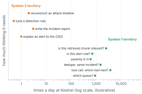
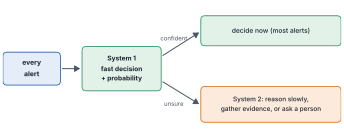
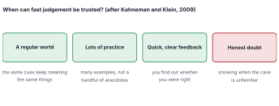

Intuition is nothing more and nothing less than recognition.
— Herbert Simon, as quoted by Daniel Kahneman, 2011
When TypeSafe AI released Jev, it didn’t call it a better LLM. It called it the first of a new class: a System One model(TypeSafe AI 2026).
“Is that a real idea, or just a clever name?”
It’s both, and it’s worth unpacking properly before we open Jev up in the next chapter. The name comes from one of the best-known ideas in modern psychology, and that idea turns out to describe the software we’ve been building in this book surprisingly well. Most of the work is fast judgement. A little of it is slow thought. And the art is sending each case to the right one.
By the end of this chapter
Describe Kahneman’s System 1 and System 2, with everyday examples.
Map them onto software: which tools behave like each.
Explain why most real work, in a SOC and in an agent, is System 1 work.
Route cases between a fast system and a slow one by doubt, and measure what that buys.
Say when fast judgement can be trusted, and why honest doubt is the key condition.
8.1 Two ways of thinking
Try this. What’s 2 + 2?
You didn’t work it out. The answer was just there. Now try 17 × 24.
That one felt different. You had to stop, hold numbers in your head, do steps in order. You could feel the effort. Your pupils probably widened.
The psychologist Daniel Kahneman used exactly these examples to introduce two modes of thinking, which he called System 1 and System 2(Kahneman 2011). System 1 is fast, automatic and effortless: recognising a face, reading a word, sensing that a sentence is hostile, knowing that 2 + 2 is 4. System 2 is slow, deliberate and effortful: long multiplication, filling in a tax form, checking an argument.
System 1 operates automatically and quickly, with little or no effort and no sense of voluntary control.
— Daniel Kahneman, Thinking, Fast and Slow, 2011
Neither is better. System 1 runs almost everything you do, and it’s usually right. But it can be confidently wrong. Here’s a famous test of that (Frederick 2005):
A bat and a ball cost $1.10 in total. The bat costs $1.00 more than the ball. How much does the ball cost?
The answer that jumps out is 10 cents. It’s wrong: the ball costs 5 cents. System 1 offered a quick, plausible answer, and unless System 2 stepped in to check, that’s the answer you’d have given.

Figure 8.1: The two systems, side by side, and the kinds of software that behave like each.
8.2 Software has mostly had one of them
Now look at the tools this book has covered, and sort them by how they “think”.
Rules and classifiers are System 1–like: fast, automatic, good at familiar patterns, useless outside them. Logistic regression doesn’t deliberate. It adds up the evidence and answers in microseconds.
Large language models, especially the newer ones that write out their reasoning before answering, are the closest software has come to System 2: slow, effortful, general, able to tackle problems they’ve never seen. Chapter 6 showed what that costs. Every step of reasoning is tokens in the loop, and tokens are time and money.
For the last few years, the industry’s instinct has been to use that System 2 machinery for everything, including judgements that System 1 handles fine. Chapter 7 counted what that looks like inside an agent: mostly small, familiar decisions, each made by a slow, general reasoner.

Figure 8.2: Tasks in and around a SOC, placed by how often they happen and how much thinking each needs (illustrative). The high-volume ones cluster at the bottom right: quick judgements made hundreds or thousands of times a day. The few that need real reasoning happen rarely.
Figure fig-task-map is illustrative, but the shape is familiar to anyone who has worked in operations. A handful of tasks need real thought: reconstructing an attack, writing the incident report, explaining a breach to the board. The overwhelming volume is quick judgement: is this alert real, which queue, which tool next, is this chunk relevant, is this the same incident as that one.
Most of the work is System 1 work. Most of the machinery we’ve been using is System 2.
That mismatch is the gap TypeSafe named Jev’s model class after. A System One model, in their sense, is one built for the high-volume corner of Figure fig-task-map. It answers typed questions fast and returns probabilities, and it doesn’t reason in text at all. Whether Jev fills that gap well is the subject of the rest of Part III, measured with the tools of Part I.
8.3 Route by doubt
Here’s the practical design question. If you have a fast system and a slow one, how do you split the work?
A good analyst already knows the answer. They triage most alerts in seconds, and they notice the ones that don’t feel right. Those get the slow treatment. The skill isn’t only fast judgement. It’s fast judgement plus an honest sense of when it’s not enough.

Figure 8.3: Route by doubt. A fast System 1 looks at every case and returns a decision with a probability. Confident cases are decided on the spot. Unsure ones go to System 2: slow reasoning, more evidence, or a person.
Let’s measure what that design buys at Kestrel. System 1 is the mock decision model reading each alert’s raw text, recalibrated on the history weeks. System 2 is a careful investigation, which in our synthetic world I can model perfectly: it learns each alert’s true probability. That’s the best any investigation could do, so it’s the upper limit of what System 2 can add.
We decide whether each live alert is a threat using the cost line from Chapter 4, with a missed threat at $10,000 and a false alarm at $400. Then we send a share of alerts to System 2, either the ones System 1 is least sure about, or a random selection.
Try it
alerts = soc.load()alerts["p"] = score_alerts(alerts, "text")history, live = soc.history_and_live(alerts)system1 = cal.Platt().fit(history.p, history.malicious)(live.p)system2 = live.p_true.to_numpy() # idealised investigationy = live.malicious.to_numpy()miss, fa =10_000, 400line = fa / (fa + miss)lo =lambda x: np.log(x / (1- x))doubt = np.argsort(np.abs(lo(np.clip(system1, 1e-6, 1-1e-6)) - lo(line)))def daily_cost(share): act = (system1 >= line).astype(int) sent = doubt[: int(share *len(y))] act[sent] = (system2[sent] >= line).astype(int) wrong = ((act ==1) & (y ==0)) * fa + ((act ==0) & (y ==1)) * missreturn wrong.sum() /7for share in (0, 0.1, 0.2, 1.0):print(f"send {share:4.0%} to System 2: ${daily_cost(share):,.0f} a day")
send 0% to System 2: $185,657 a day
send 10% to System 2: $165,886 a day
send 20% to System 2: $156,343 a day
send 100% to System 2: $148,743 a day
Figure 8.4: Expected cost per day as more alerts go to System 2. Sending the alerts System 1 is least sure about (green) gets most of the benefit early. Sending a random share (grey) gets almost nothing until you send nearly everything.
The result in Figure fig-routing-curve is the whole argument for a dual-process design, in one chart. Sending the 20% of alerts System 1 is least sure about captures 79% of everything System 2 could possibly add. Sending a random 20% captures 3%.
And the cost of System 2 is paid only on that 20%. If a careful pass takes 25 seconds and a fast decision 0.15 (illustrative numbers again), then routing by doubt averages about 5.2 seconds per alert, against 25 for sending everything to the slow system.
The value of a fast system isn’t only its speed. It’s knowing which cases it shouldn’t decide.
That’s why calibration keeps coming back in this book. Routing by doubt only works if System 1’s doubt is honest: if its 0.5 really means “this could go either way” and its 0.02 really means “almost certainly fine”. An overconfident System 1 sends the wrong cases to System 2, and keeps the dangerous ones for itself.
8.4 When can fast judgement be trusted?
Psychologists spent years arguing about intuition. Some, like Gary Klein, studied experts such as firefighters and nurses, whose split-second judgements were remarkably good. Others, like Kahneman, catalogued the ways snap judgements go wrong. In 2009 the two of them wrote a joint paper setting out when intuition can be trusted, and found they mostly agreed (Kahneman and Klein 2009).

Figure 8.5: Conditions under which fast, intuitive judgement tends to be reliable, adapted from Kahneman and Klein. SOC triage mostly meets the first three. The fourth is what separates good experts, and good models, from confident ones.
Their answer, roughly: trust fast judgement in a regular environment, where the same cues keep meaning the same things, after plenty of practice with quick, clear feedback (Figure fig-conditions). Don’t trust it in chaotic environments, or where feedback is slow and rare, however confident the expert feels.
I’ve added a fourth condition that I think matters just as much for machines: an honest sense of doubt. A good expert knows when a case is outside their experience. A good System One model should too, and for a model “knowing” means one thing: calibrated probabilities that drop towards uncertainty when the case is unfamiliar.
SOC triage fits the first three conditions better than most jobs. Alerts come from a fixed set of detectors; there are thousands of examples; analysts find out, eventually, which alerts were real. Novel attack investigations fit badly. So do one-off strategic decisions. That’s a useful rule of thumb for where System One models belong, and where they don’t.
Where this breaks
The two-systems idea is a metaphor, and Kahneman himself was clear that the “systems” are shorthand, not two machines in the brain. Mapping it onto software is looser still: a System One model isn’t intuitive in any human sense; it’s a trained function. And routing by doubt has a weakness: if System 1 is confidently wrong about a whole class of cases, say a new attack technique it has never seen, it won’t route them to System 2, because it doesn’t feel unsure. Random audits (Chapter 14) and drift checks are there to catch what doubt misses.
Set the threshold
Kestrel’s System 2 is expensive: a senior analyst’s time. The team can afford to send 10% of alerts, not 20%. Using Figure fig-routing-curve, roughly how much of the benefit do they keep? And if they could make System 1 better calibrated, would the curve move up, down, or change shape?
(They’d keep somewhat over half. Better calibration makes the green curve drop faster, because the cases System 1 marks as uncertain would really be the uncertain ones, so each escalation buys more.)
8.5 Where we are
We started with 2 + 2 and 17 × 24, and found two modes of thinking in each of us. Software, we saw, has mostly used its slow, general mode for every job, even though most jobs are quick judgements. So we put a fast system in front of a slow one and sent across only the cases it doubted, and a fifth of the traffic bought most of the benefit. That only worked because the fast system’s doubt was honest, which is exactly the condition under which psychologists say intuition can be trusted.
Now we can look inside the model that took the name.
List five decisions from your own work that are System 1 work and two that need System 2. What makes the difference?
In the lab, route the alerts randomly instead of by doubt, and plot both curves. At what share does random routing catch up?
Explain in plain words why an overconfident System 1 makes routing by doubt fail.
Using Kahneman and Klein’s conditions, would you trust a System One model to triage insurance claims? To approve mortgages? To decide which patient a nurse sees first? Why or why not?
Next: what’s actually inside Jev? We’ll separate what TypeSafe has published, what they claim, and what nobody outside knows yet.
Frederick, Shane. 2005. ‘Cognitive Reflection and Decision Making’. Journal of Economic Perspectives 19 (4): 25–42.
Kahneman, Daniel. 2011. Thinking, Fast and Slow. Farrar, Straus and Giroux.
Kahneman, Daniel, and Gary Klein. 2009. ‘Conditions for Intuitive Expertise: A Failure to Disagree’. American Psychologist 64 (6): 515–26.